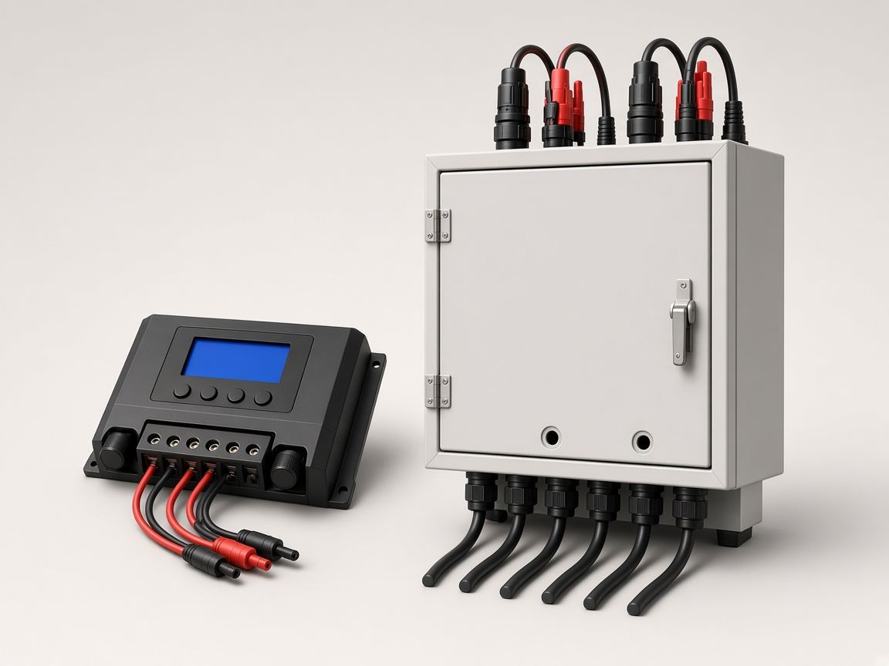

Солнечная энергетика · постоянный ток
Контроллеры заряда и комбайнер-боксы для солнечных станций
Yucore Industrial Supply подбирает контроллеры заряда и комбайнеры постоянного тока из Китая для поставки в Россию. Контроллер ведет массив на аккумулятор. Комбайнер собирает строки до инвертора. Оба узла описываются своими токами и напряжениями. Наличие до проверки не гарантируется.
Если MPPT уже встроен в гибридный инвертор, отдельный контроллер нужен не всегда. Пришлите схему или модель инвертора, чтобы не заказать второй контур заряда.

Отдельные позиции постоянного тока
Что указать по контроллеру и комбайнеру
Официальная авторизация брендов не заявляется без письменного подтверждения по конкретному заказу. Наличия и срока на этой странице нет: их подтверждаем в ответе.
MPPT
- Контроллер с поиском точки максимальной мощности
- Напряжение и ток массива
- Напряжение батареи и ток заряда
- Для схемы, где MPPT не встроен в инвертор
PWM
- Более простой контроллер заряда
- Имеет смысл, если он уже заложен в схему или стоит на объекте
- Напряжение батареи, ток и фото старого устройства
- Не замена сетевому инвертору
Комбайнер-боксы
- Число строк и ток на вход
- Напряжение постоянного тока
- Аппараты защиты, если они заданы проектом
- Способ монтажа: помещение или улица
Смежные строки того же письма
- Модули: мощность, напряжение, количество
- DC-кабель: сечение и длина
- Разъемы: тип и количество
- Эти строки не заменяют контроллер или комбайнер
Как это ищут
Формулировки для запроса
FAQ
Вопросы по контроллерам и комбайнерам
Чем контроллер заряда отличается от солнечного инвертора?
Контроллер заряжает аккумулятор от массива и сам по себе не формирует сетевое напряжение объекта. Инвертор формирует переменный ток. В гибридном инверторе MPPT может быть уже внутри, это проверяется по модели.
Что прислать для подбора комбайнер-бокса?
Число входов, напряжение постоянного тока, ток строки, условия установки и количество. Если есть спецификация или фото установленного ящика, приложите их.
Можно ли заменить контроллер заряда по фото шильдика?
Да. В заявке нужно сверить напряжение батареи и максимальный ток. Замена с другим напряжением батареи не считается совместимой без отдельного согласия. Саму батарею описывают на странице накопителей.
Куда относить частотный преобразователь и силовой трансформатор?
Частотный преобразователь относится к приводу электродвигателя. Силовой трансформатор станции относится к отдельной странице силовых трансформаторов. В одном списке их можно указать разными строками. Как разнести строки, описано в руководстве по заявке.
Есть схема постоянного тока?
Пришлите число строк, напряжения и фото. Если схема еще черновая, напишите, каких цифр в ней нет.
Рядом по теме